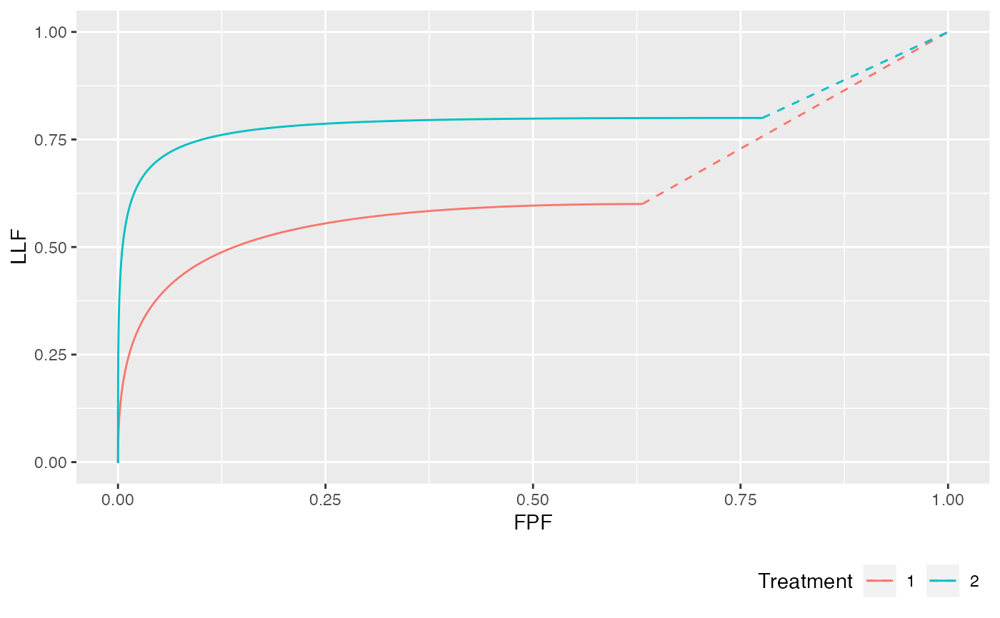
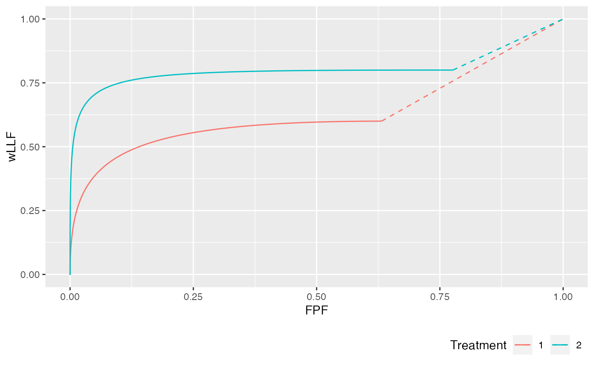
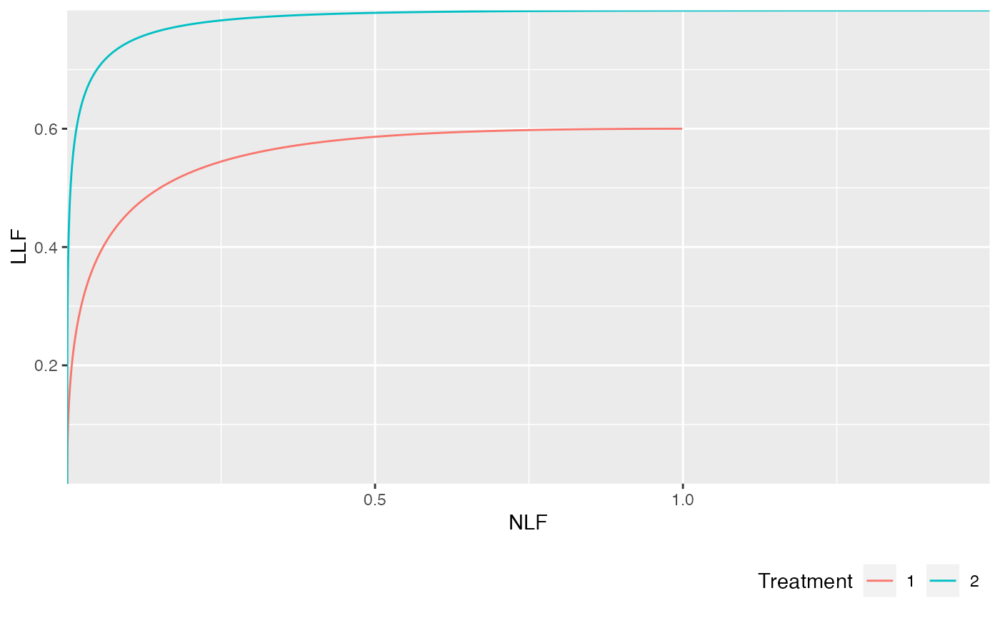
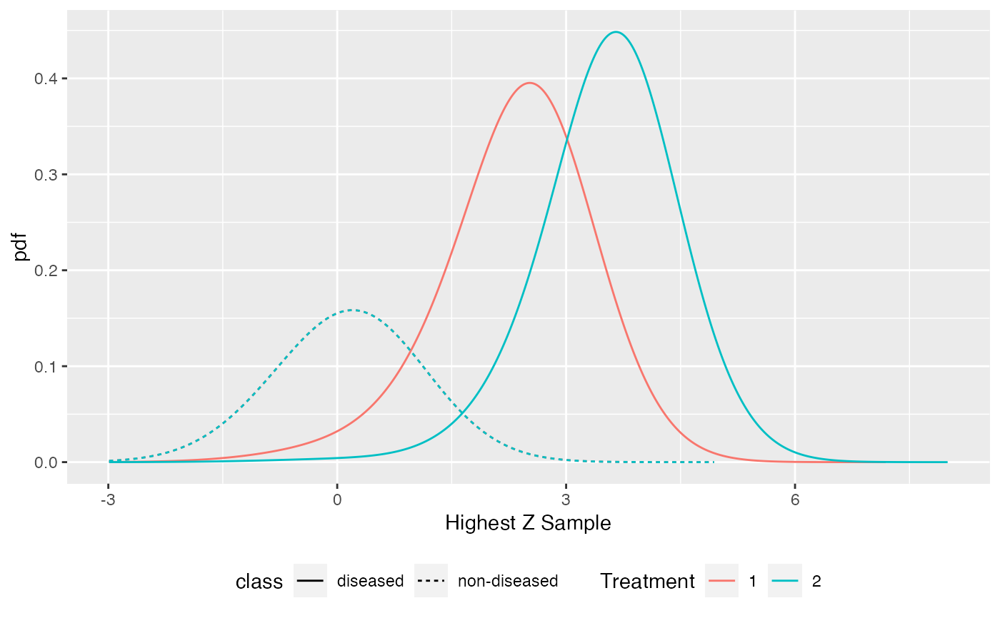

RSM predicted operating characteristics, ROC highest rating pdfs and FOMs, for FROC data
PlotRsmOperatingCharacteristics.RdVisualize RSM predicted ROC, AFROC, wAFROC, FROC and pdf (probability density functions of highest ratings curves for non-diseased and diseased cases), for sets of search model parameters: mu, lambda, nu and zeta1.
PlotRsmOperatingCharacteristics( mu, lambda, nu, zeta1, lesDistr, relWeights = 0, OpChType = "ALL", legendPosition = c(1, 0), legendDirection = "horizontal", legendJustification = c(0, 1), nlfRange = NULL, llfRange = NULL, nlfAlpha = NULL )
Arguments
| mu | Array: the mean of the Gaussian distribution for the ratings of latent LLs (continuous ratings of lesions that are found by the observer's search mechanism). The ratings of NLs are distributed as N(0,1). |
|---|---|
| lambda | Array: the intrinsic Poisson distribution parameter
which models the random numbers of latent NLs (suspicious regions that do
not correspond to actual lesions) per case. The corresponding
physical parameter is |
| nu | Array: the intrinsic parameter which models the random
numbers of latent LLs (suspicious regions that correspond to actual
lesions) per diseased case. The corresponding physical parameter is
|
| zeta1 | Array, the lowest reporting threshold; if missing the default is -3. [Used to demonstrate continuity of the slope of the ROC at the end point; TBA Online Appendix 17.H.3] |
| lesDistr | Array: the probability mass function of the lesion distribution for diseased cases. See UtilLesionDistr. |
| relWeights | The relative weights of the lesions; a vector of
length equal to |
| OpChType | The type of operating characteristic desired: can be " |
| legendPosition | The positioning of the legend: " |
| legendDirection | Allows control on the direction of the legend;
|
| legendJustification | Where to position the legend, default is bottom right corner c(0,1) |
| nlfRange | This applies to FROC plot only. The x-axis range, e.g., c(0,2),
for FROC plot. Default is " |
| llfRange | This applies to FROC plot only. The y-axis range, e.g., c(0,1),
for FROC plot. Default is " |
| nlfAlpha | Upper limit of the integrated area under the FROC plot.
Default is " |
Value
A list of elements containing five ggplot2 objects (ROCPlot, AFROCPlot wAFROCPlot, FROCPlot and PDFPlot) and two area measures (each of which can have up to two elements), the area under the search model predicted ROC curves in up to two treatments, the area under the search model predicted AFROC curves in up to two treatments, the area under the search model predicted wAFROC curves in up to two treatments, the area under the search model predicted FROC curves in up to two treatments.
ROCPlotThe predicted ROC plotsAFROCPlotThe predicted AFROC plotswAFROCPlotThe predicted wAFROC plotsFROCPlotThe predicted FROC plotsPDFPlotThe predicted pdf plotsaucROCThe predicted ROC AUCsaucAFROCThe predicted AFROC AUCsaucwAFROCThe predicted wAFROC AUCsaucFROCThe predicted FROC AUCs
Details
RSM is the Radiological Search Model described in the book. This
function is vectorized with respect to the first 4 arguments. For
lesDistr the sum must be one. To indicate that all dis. cases
contain 4 lesions, set lesDistr = c(0,0,0,1).
References
Chakraborty DP (2006) A search model and figure of merit for observer data acquired according to the free-response paradigm, Phys Med Biol 51, 3449-3462.
Chakraborty DP (2006) ROC Curves predicted by a model of visual search, Phys Med Biol 51, 3463--3482.
Chakraborty, DP, Yoon, HJ (2008) Operating characteristics predicted by models for diagnostic tasks involving lesion localization, Med Phys, 35:2, 435.
Chakraborty DP (2017) Observer Performance Methods for Diagnostic Imaging - Foundations, Modeling, and Applications with R-Based Examples (CRC Press, Boca Raton, FL). https://www.crcpress.com/Observer-Performance-Methods-for-Diagnostic-Imaging-Foundations-Modeling/Chakraborty/p/book/9781482214840
Examples
## Following example is for mu = 2, lambda = 1, nu = 0.6, in one treatment and ## mu = 3, lambda = 1.5, nu = 0.8, in the other treatment. 20% of the diseased ## cases have a single lesion, 40% have two lesions, 10% have 3 lesions, ## and 30% have 4 lesions. lesDistr <- c(0.2, 0.4, 0.1, 0.3) PlotRsmOperatingCharacteristics(mu = c(2, 3), lambda = c(1, 1.5), nu = c(0.6, 0.8), lesDistr = lesDistr, legendPosition = "bottom", nlfRange = c(0, 1), llfRange = c(0, 1))#> $ROCPlot#> #> $AFROCPlot#> #> $wAFROCPlot#> #> $FROCPlot#> #> $PDFPlot#> #> $aucROC #> [1] 0.9326383 0.9866740 #> #> $aucAFROC #> [1] 0.7645398 0.9293791 #> #> $aucwAFROC #> [1] 0.7645398 0.9293791 #> #> $aucFROC #> [1] 0.3214509 0.4463223 #>